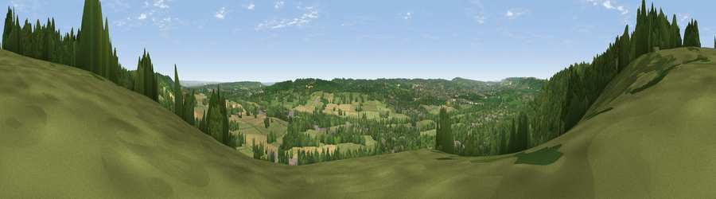

Viewpoint near Kemsing
#23959 in England · top 22% of its area beats it · near KemsingThe view, rendered

A 360° render of this exact spot computed from the terrain model, tree cover and land cover — summer colours, afternoon light, calibrated against photographs of famous viewpoints. Real trees, hedges and buildings will differ in detail.
The panorama
Grey silhouette: terrain skyline in each direction (720 bearings, Earth curvature and refraction included). Dashed green: skyline with trees (+15 m) and buildings (+8 m) as obstacles. Blue strip: how far the ground is visible on each bearing.
Where the view opens
Wedge length = distance to the farthest visible ground on that bearing (vegetation-aware). Rings at 10, 25 and 50 km.
What fills the view
42% woodland · 39% grassland · 12% cropland · 6% built-up
Angular shares of the visible panorama (visual magnitude), not map area. Landscape diversity 0.51 (0–1 Shannon).
Key numbers
More beautiful places nearby
The staircase of upgrades: each row has a higher view potential than everything closer. Driving times are estimates from straight-line distance, calibrated against real road routing — check an actual route before setting out.
| Place | Direction | Drive | Score |
|---|---|---|---|
| Viewpoint near Wrotham | ENE · 3 km | ~7 min | 52.0 |
| Viewpoint near Wrotham | E · 4 km | ~9 min | 65.1 |
| Viewpoint near Wrotham | E · 6 km | ~12 min | 66.6 |
| Viewpoint near Shipbourne | S · 6 km | ~13 min | 69.1 |
| Box Hill | W · 36 km | ~55 min | 70.4 |
| Viewpoint near Box Hill Village | W · 36 km | ~55 min | 71.0 |
| Viewpoint near Westwell | ESE · 44 km | ~64 min | 72.2 |
| Malling Hill | SSW · 50 km | ~71 min | 73.8 |
51.31129, 0.23292 · source: screening · position refined by local search. Computed location — check access rights before visiting.